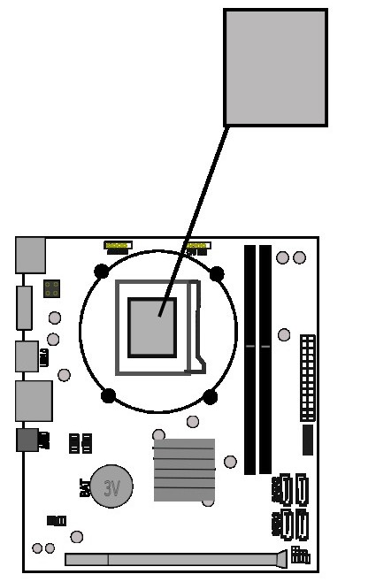
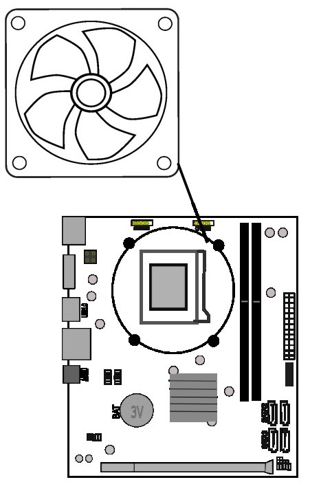
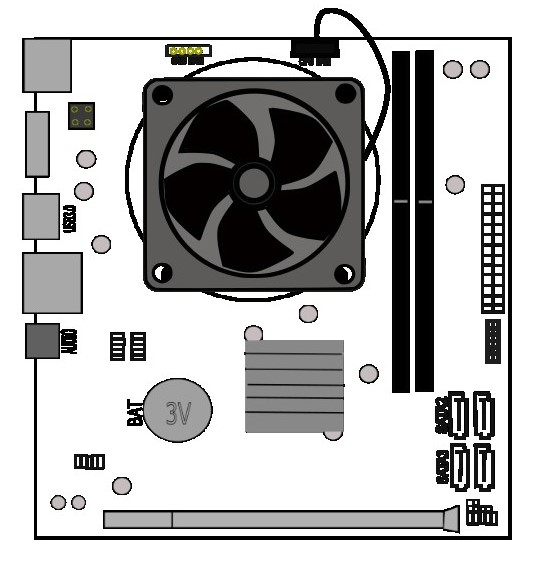
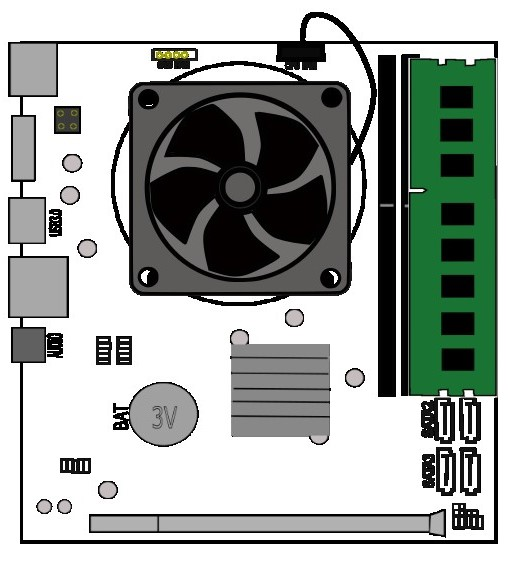
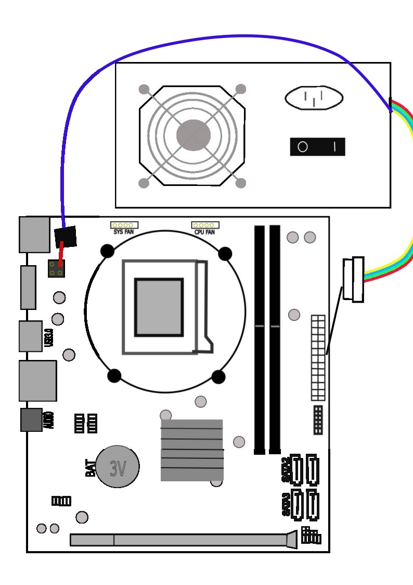
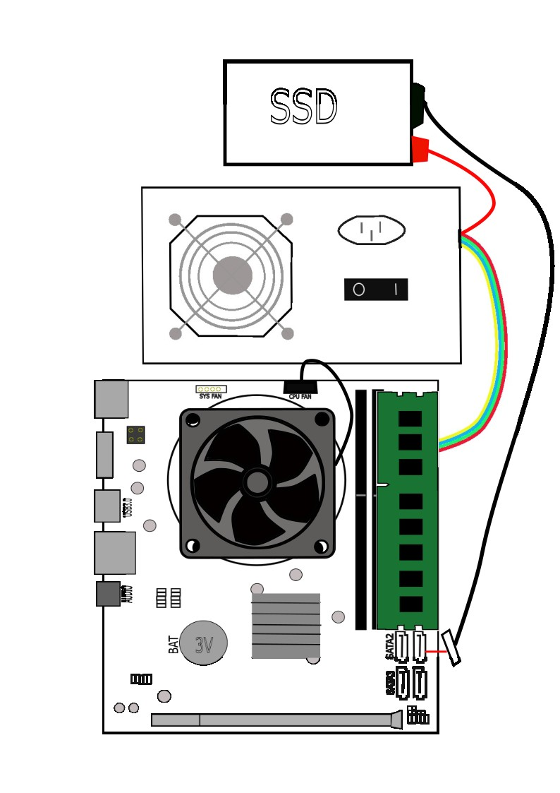
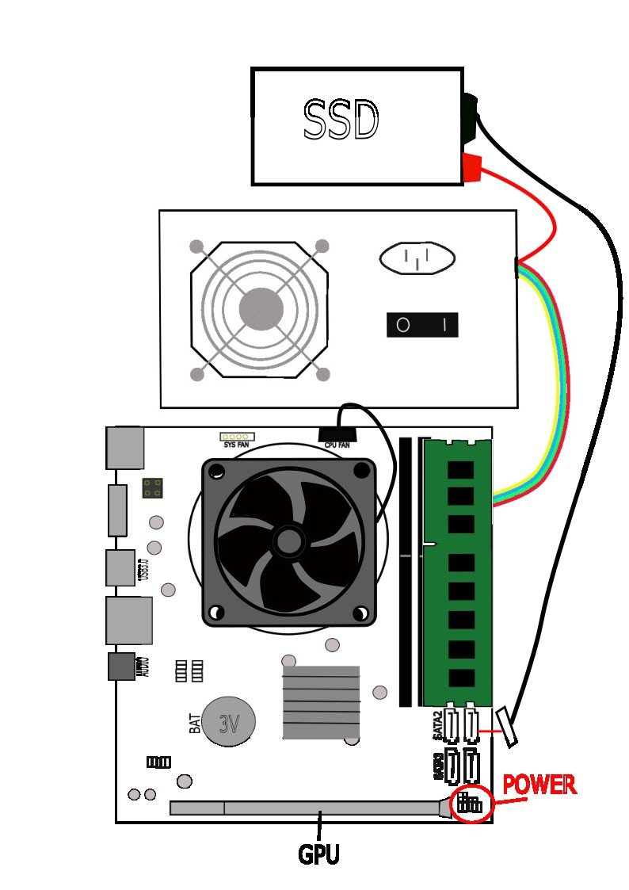
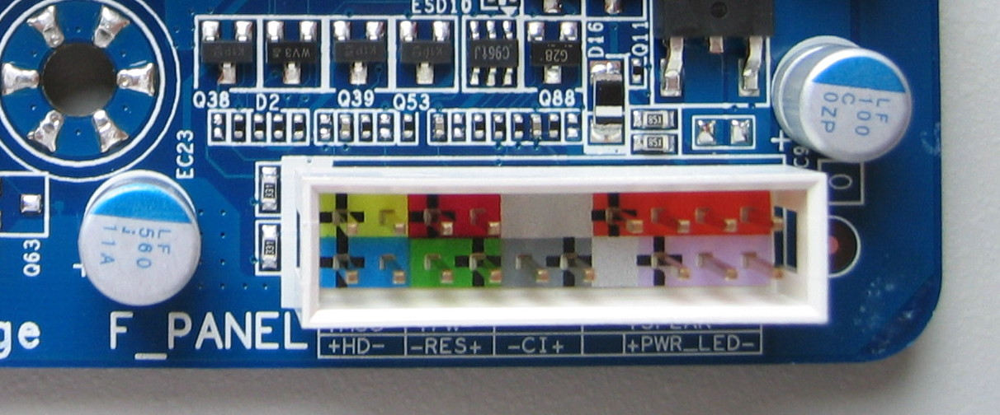

PC MATCH
SPLOŠNA NAVODILA ZA SESTAVO RAČUNALNIKA
Vsaka matična plošča ima par delov drugačnih od drugih in svoja navodila. Obstaja pa tudi splošna sestava računalnika:
Prvi korak
Pri prvem korako montiramo procesor na matično ploščo. Nato moramo montirati matično ploščo v ohišje, tako bo lašje nadeljevati sestavljanje.
Drugi korak
Kot naslednji korak, nad procesor montiramo hladilnik oziroma cooler, katerim ponavadi so priloženi drugačni deli za pritrditev k pravemu podnožju oziroma AM tip podnožja ali LGA tip podnožja. Seveda kabel hladilnega ventilatorja pritrdimo kjer piše CPE FAN.
Tretji korak
Pri tretjem koraku se posvetimo RAM-u. RAM moramo pridrditi na obeh koncih z obema rokama istočasno. RAM je pritrjen, ko naredi klick.
Četrti korak
Seveda računalnik potrebuje napjanje, zato rabimo pritrditi napajalnik oziroma power supply. Na napajalniku sta dva kabla, ki sta povezana z matično ploščo.
Največi konektor povežemo na največjo režo. Da preverimo, če je kabel povezan moramo poskusiti če ga lahko povlečemo, če je lepo zataknjeno,
bomo imeli težave ga odklopiti če pa ga snamemo brez problema, pomeni, da ga nismo dobro povezali.
Naslednji kabel ima 4 pine ali pa 6 pinov, in ga povečemo zraven procesorja.
Peti korak
Povezanje SSD-ja ali HHD-ja je enaka. Obadva sta povezana na SATA povezavo na matični plošči in napajalniku.
Šesti korak
Na koncu se posvetimo še povezati ohišje in GPU na matično ploščo. GPU se pritrdi na podoben način, kot RAM, ki se nahaja ob vznožju matične plošče. Vsako ohišje ima drugačne kable za povezati stikalo za vklop in usb povezave. Nekateri so all-in-one, nekateri so pa razdeljeni v 5 majnih kablov. Vsaka matična plošča ma svojo shemo kako jih povezati. Povežemo ga na F_PANEL. Zadnji kabel, ki obstaja se ga poveže na matični plošči zraven USB portala.
, via Wikimedia Commons ">